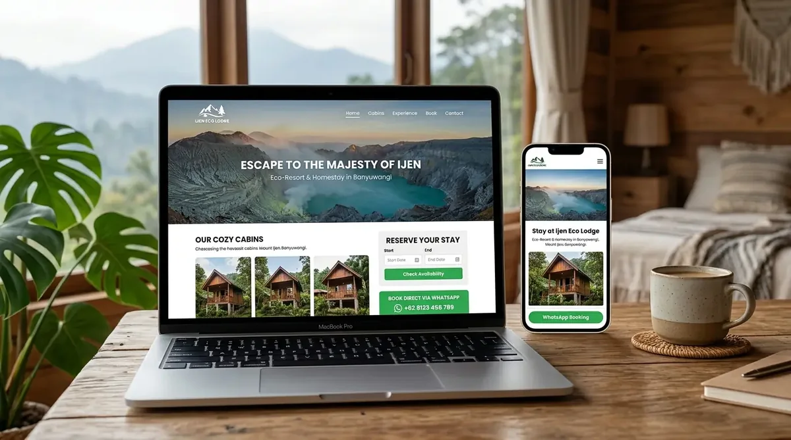

Jasa Pembuatan Website Homestay, Hotel & Wisata Banyuwangi
Solusi website promosi dan reservasi mandiri untuk pengelola homestay, villa di Licin/Glagah, agen tur Kawah Ijen, persewaan jeep, dan travel di Banyuwangi untuk menerima tamu langsung tanpa potongan komisi OTA.

Ketergantungan penuh pada Online Travel Agent (OTA) memotong margin keuntungan Anda sebesar 15% hingga 20% untuk setiap pemesanan kamar atau paket wisata. Padahal, banyak wisatawan kini mencari nama homestay atau paket tur langsung di Google untuk mendapatkan harga terbaik.
Website pariwisata dari OptiSitus dirancang untuk memaksimalkan direct booking. Wisatawan lokal maupun mancanegara dapat melihat foto kamar dalam kualitas tajam tanpa loading lama, mengecek jadwal tur Ijen Blue Fire, mengecek rute lokasi, dan langsung mengonfirmasi ketersediaan kamar ke nomor WhatsApp resepsionis Anda tanpa perantara.
Fasilitas & Fitur yang Disertakan
Alur Pengerjaan Praktis
Inventarisasi Tipe Kamar & Paket Wisata
Kirimkan foto kamar, daftar fasilitas, harga per malam, dan destinasi paket tur Anda.
Desain Visual Menarik Bertema Wisata
Penyusunan tata letak yang memanjakan mata dan menonjolkan keasrian serta daya tarik lokal.
Integrasi Tombol Booking & Peluncuran
Pengujian alur reservasi via WhatsApp dan pendaftaran lokasi di mesin pencari.
Ijen Eco Resort & Tour
Studi kasus penginapan lereng Ijen yang menghemat belasan juta rupiah potongan komisi OTA berkat 65% direct booking via website.
Pelajari Studi Kasus Selengkapnya